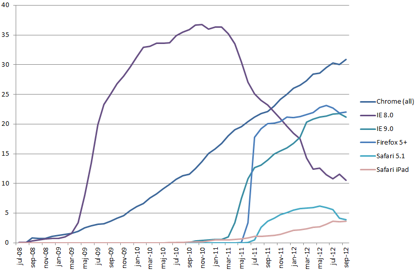

ProCap - Webbläsarutredning
- Vilken webbläsare används mest?
- Samma val för internt och externt bruk?
- Följs standarder?
- Kan webbläsarna köra våra befintliga system?
Webbläsaranvändning i Sverige
Samma val för internt och externt bruk?
- Vi kan inte styra våra externa användares val av webbläsare.
- Vi kan styra interna användare.
- Billigare att utveckla för en webbläsare istället för flera.
Standarder
The second rize of the web
Microsoft dödar innovationerna genom att inte utveckla IE.
Men de senaste åren har innovationerna tagit fart som aldrig förr.
Mozilla Firefox, Web 2.0, gmail, google maps, google docs...
Teknikerna har nu börjat standardiseras under paraply termen HTML5.
Organisationer
- W3C - World Wide Web Consortium
- WHATWG - Web Hypertext Application Technology Working Group
- ECMA - European association for standardizing information and communication systems
- Khronos
Tekniker

Tekniker vi valt att ta i beaktan
- JavaScript motorer
- Web Socket
- Binära data typer
- Rika renderings möjligheter såsom WebGL
- CSS3
- Cache
- Web workers
Tekniker / Web Socket
Standardiserat även på serversidan i JEE 7 under JSR-356Tekniker / Binära data typer
Kan webbläsarna köra våra befintliga system?
Share Point
Från och med version 2010, klarar de fyra största webbläsarnas senaste releaser.Oracle Forms
Java appletBeslutsförslag
Interna användare
- Interna användare bör använda Google Chrome som standard webbläsare.
- IE8 behålls som sekundär webbläsare för att garantera bakåtkompabilitet mot äldre system.
- IE8 fasas successivt ut och uppdateras ej till nyare versioner av IE.
Beslutsförslag
Externa användare
- Stöd för Google Chrome
- Stöd för IE9 och senare versioner
- Stöd för Apple Safari
- Stöd för Firefox